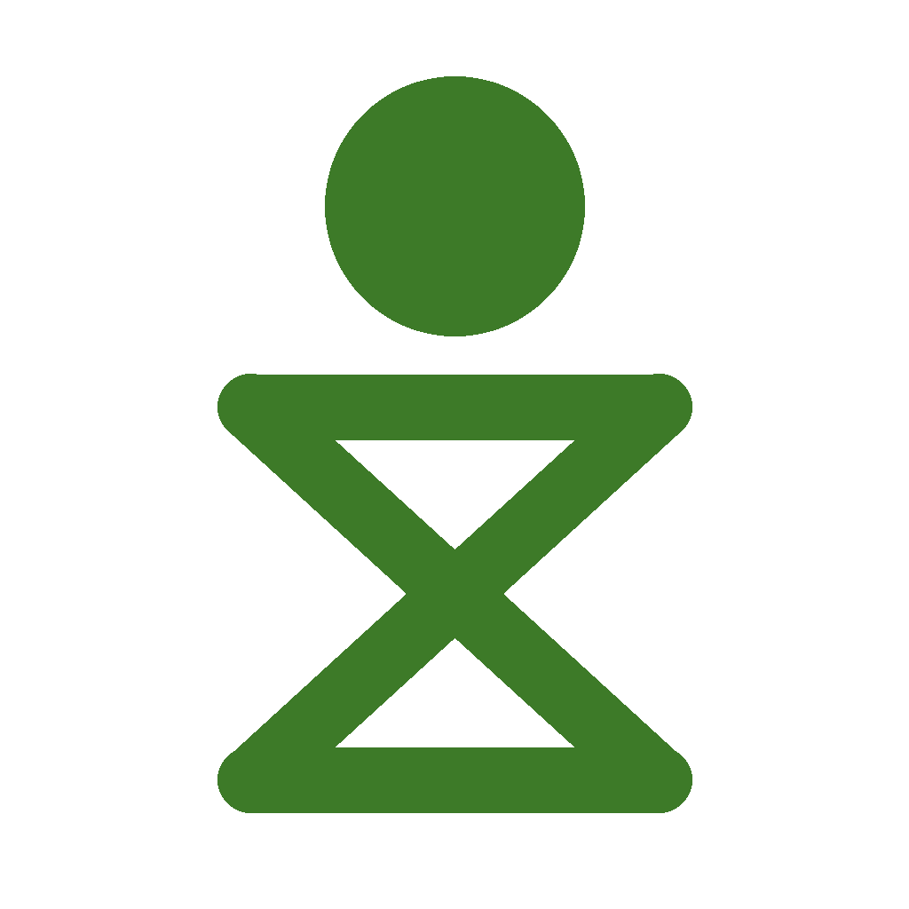

Weniger Zeit in ablenkenden Apps verlieren, ohne Blockieren, mit Fortschritt statt Verboten.
Einladung in der App öffnen App über TestFlight installierenNoch keine App? Installiere sie zuerst über TestFlight. Falls die Freundschaft danach nicht automatisch verbunden ist, lass dich einfach nochmal einladen, sobald du eingerichtet bist.